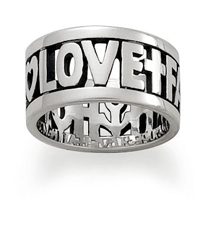
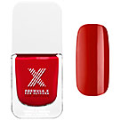
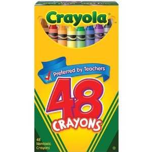

Faith, Hope and Love Ring
From $69.00
A reminder of the values that endure, the cross represents faith, the anchor stands for hope, and the heart is love. Read more...

Timeless staples just got a brilliant makeover. Infused with an amazing luminescent ingredient that enhances color and overall shine, it also features a fast-drying agent that gives you a smooth, flawless finish in no time. Sephora’s patented no-compromise formulation offers everything you’ve ever wanted in a nail color: invincible wear, incredible saturated color, and ultimate shine. Read more...

48 ct. Crayola Crayons are the classic kids' art tool. They are the colors generations have grown up with. Crayola Crayons are designed with a focus on true color, smoothness, and durability.Read more...